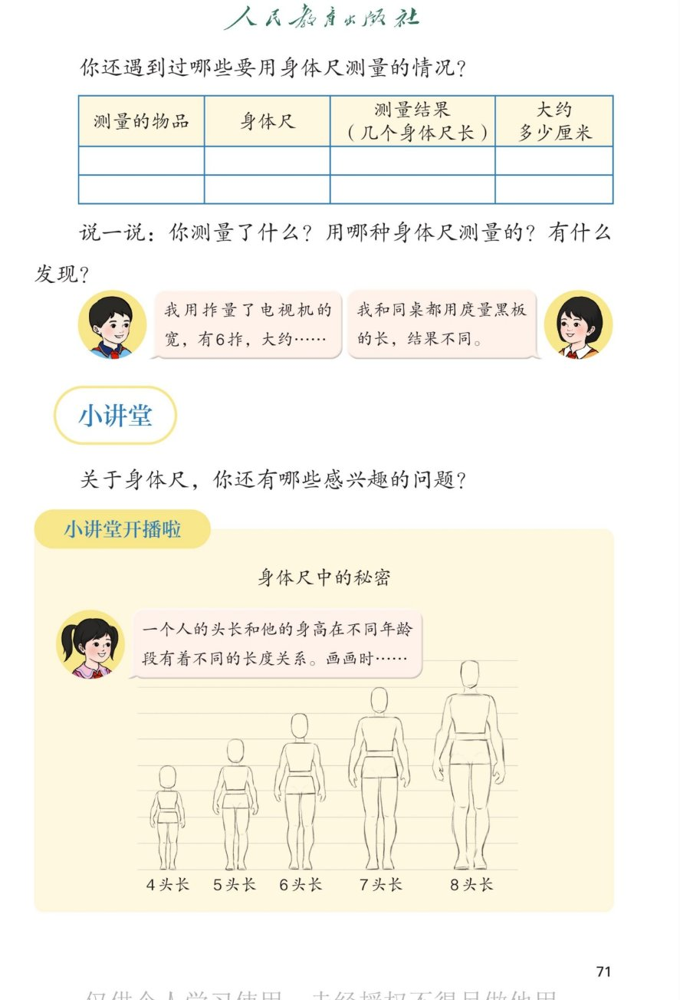

🔊 综合与实践 · 身体上的尺子 · 课本第 71 页 · 说一说与小讲堂
人教版《数学》二年级上册 · 有声图文带读 · 先想后看解析 · 身体尺中的秘密：头长与身高
题数
6
认知
2
强化
3
拓展
1
本页重点
记录表 · 6拃约90厘米 · 4头长到8头长
🎧 分两步学：
① 解析教材图片
——纯声音读图，读到哪一块哪一块闪动提示；关键处先倒计时让你思考，再在图片下方给出解析并朗读。
② 分层提问练习
——六道分层题（认知 / 强化 / 拓展），先思考再展开解析、朗读参考答案；这一步不再回到图片。
也可以随时点任意一句话、图上任意一块单独听；点课本文字卡还会展开答案。
教材图片（点块听读，读到哪块哪块闪）

📖 人教版《数学》二年级上册 · 课本第 71 页 · 图片仅供个人学习，版权归人民教育出版社所有
🤔 想一想（点我可跳过）
课本的文字（点句子：听读 + 看答案）
记录表
身体尺测量记录表怎么填？
看答案 ▾
四栏：
测量的物品 → 身体尺 → 几个身体尺长 → 大约多少厘米
；
示例：课本的宽｜拃｜2 拃｜大约 30 厘米（以实测为准）；
最后一栏要
估算
：一拃约 15 厘米，2 拃约 30 厘米。
估一估
电视机宽 6 拃，大约多少厘米？
看答案 ▾
一拃约
15 厘米
；
6 拃 = 6 个 15 厘米 ≈
90 厘米
；
💡 身体尺量出"几个"，再乘一拃的长，就能估出厘米数
想一想
都用庹量黑板，为什么结果不同？
看答案 ▾
两人
个子不同 → 庹不同
；
庹长量同一块黑板，得到的数就不一样；
想比较、想交流，还是要用
统一的米和厘米
。
小讲堂
身体尺中的秘密：头长与身高
看答案 ▾
头长
就是头的长度；
年龄越小，身高里头的"份"越大：婴儿约
4 头长
，成人约
8 头长
；
画画时按
几个头长
去画身高，人物比例才自然。
分层提问练习（先想后看解析）
📋
认知
身体尺记录表有哪四栏？
看解析
🤔 想一想
解析：
四栏：
测量的物品、身体尺、几个身体尺长、大约多少厘米
；
先量出"几个"，再估出"多少厘米"。
🏫
认知
小讲堂讲了一个什么秘密？
看解析
🤔 想一想
解析：
秘密是：
头长和身高的关系
随年龄变化；
婴儿约
4 头长
，成人约
8 头长
。
📺
强化
电视机的宽有 6 拃，大约是多少厘米？怎么估？
看解析
🤔 想一想
解析：
一拃约
15 厘米
；
6 拃 ≈ 6 个 15 厘米 ≈
90 厘米
；
💡 估出来的是"大约数"，要准数还得用尺子
🤔
强化
我和同桌都用庹量黑板的长，为什么结果不同？
看解析
🤔 想一想
解析：
个子不同 →
庹不同
→ 数不同；
和"5 拃对 3 拃量课桌"一样，都是
单位不同
；
💡 所以交流测量结果要用统一的单位
🧒
强化
从 4 头长到 8 头长，说明什么？
看解析
🤔 想一想
解析：
从婴儿
4 头长
到成人
8 头长
；
年龄越大个子越高，
身高里的头长越多
。
🌈
拓展
"头长与身高"的秘密在生活中怎么用？
看解析
🤔 想一想
解析：
画画先定
头长
，身高画几个头长，比例才好看；
估身高：量别人头长，乘大约 8 就是成人身高；
🌈 头长也是一把身体尺
① 解析教材图片
② 分层提问练习
⏹ 停止
纯声音 + 高亮跟随 · 想好才出解析
← 返回导航